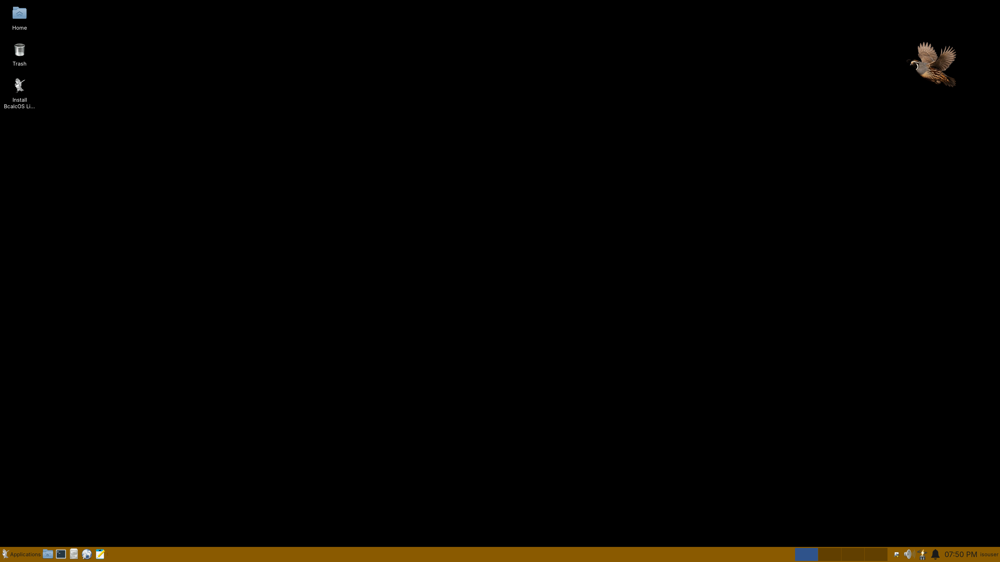
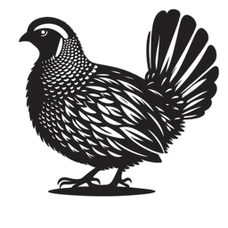
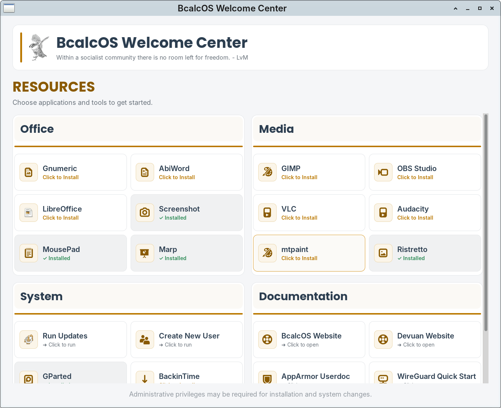

BcalcOS
A Linux Desktop.
Good-to-go, general use computer desktop system based on Devuan. Purposeful choices for software and user experience.
What you get
A single experience.
All users start with the same system, packages, applications, and aesthetics.
DevuanFoundation
sysvinitInit system
XLibreDisplay server
SLiMDisplay manager
XcfeDesktop

Try before install
See the desktop first.
Boot BcalcOS and explore the same environment you'll have after installation.
No risk as no changes until installed.
Streamlined installation process.
Familiar desktop with a start menu.

Upon the base
Simplified first steps.
The Welcome Center helps new users:
Get oriented.
Install curated applications.
Perform common tasks.
Find resource guides.

Project principles
- Simpler is usually better.
- Open process produces better outcomes.
- Value effort and merit.
- Treat people as individuals.
Frosty and Alert
Basic doesn't mean bare.
BcalcOS starts with limited default applications but does include useful background tools for security and maintenance.
UFW and AppArmor running.
ClamAV and WireGuard installed.
Custom scripts for updates and maintenance.
More you know
Information when you want it.
Ready to try?
Download BcalcOS.
Boot the live ISO and decide for yourself. Getting Started Guide at the link.
Download ISO